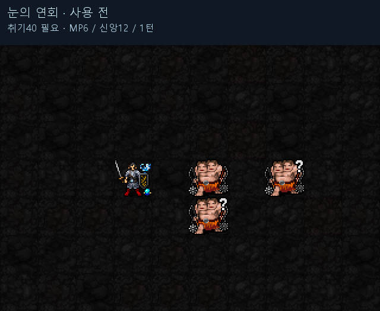

사용 조건·비용 신앙120 이상 · 취기40 이상 · 취기 전부 소모 · MP6 · 신앙12 · 시전1턴 유지 효과 시전 후6+⌊기도술/6⌋턴. 취기20으로 취급하며1·3성 가호 유지,과음 EV−3 해소. 발밑의 눈꽃 고리가 따라다님. 적중 효과 공격 주문·피해 도구·기록된 구름의 첫 피해 지점에 주변1칸(3×3) 눈꽃 폭발. 중심2d(5+⌊기도술/3⌋),주변은 같은 굴림의50%(버림). 사용당1회·10aut당1회. 같은 구름 사용 전체에서는 최대1폭발. 같은 사용의 냉각은 적마다 최대1. 기도술12 기준 시전 후8턴 · 중심2d9 · 주변절반 · 종료 후15턴 재사용 대기.1성 명목 주문 위력+16%는 피해+16%가 아니며 도구 위력 증가 효과도 아님.
연회 시작 → 발밑 고리 유지·이동 → 주문과 도구 적중 지점의 눈꽃 폭발 → 종료 순서입니다. 자동 주변 피해 장판이 아닙니다.

실제 SDL 게임 캡처를 확대·느리게 재생. 연한 하늘색 1픽셀 칸 테두리로 실제3×3범위를 표시합니다. 내부는투명하고선은눈꽃·몬스터아래에있어눈꽃을가리지않습니다. 벽/시야에맞춰범위를제한합니다. 전투 수치·판정 변경 없음. 라미1·3성 승인 유지,5성 검토 중.